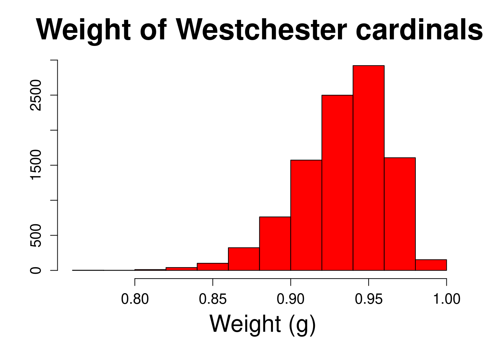
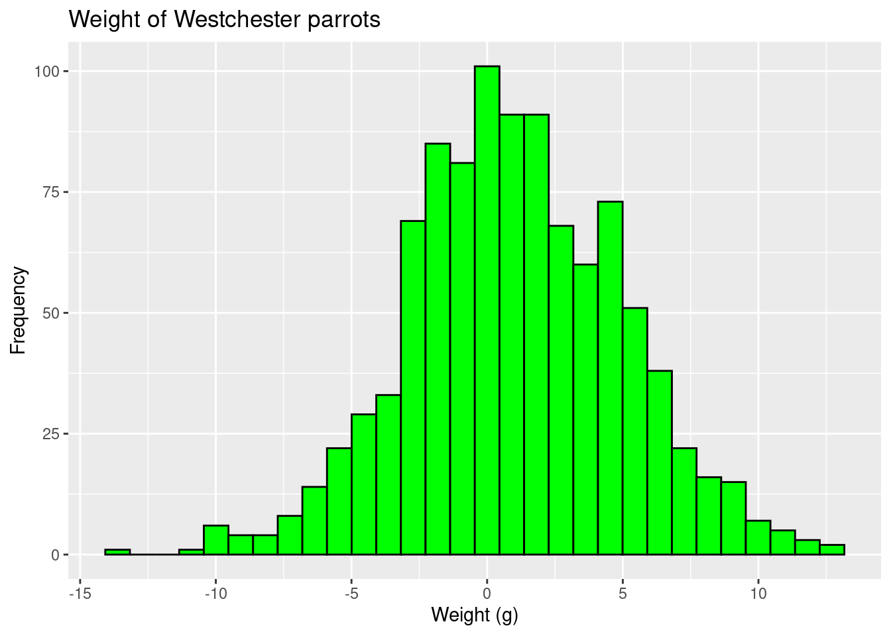
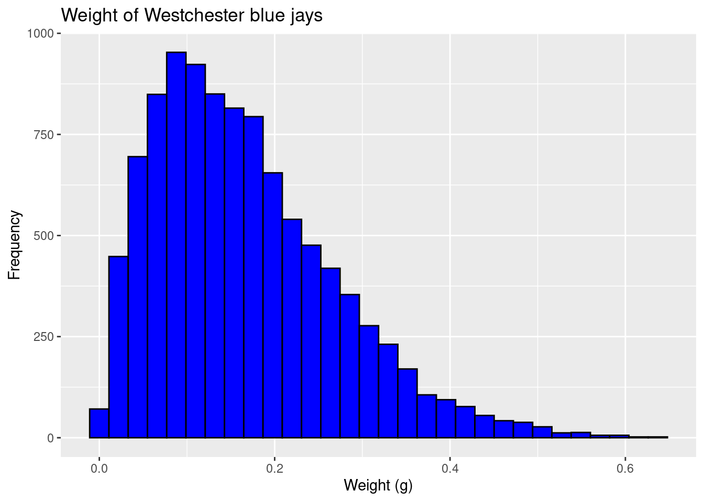
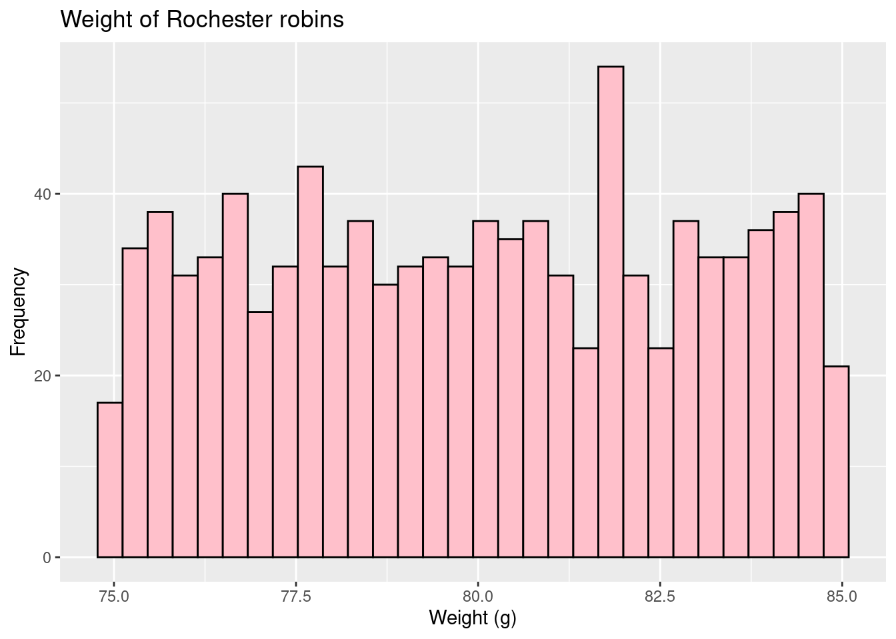
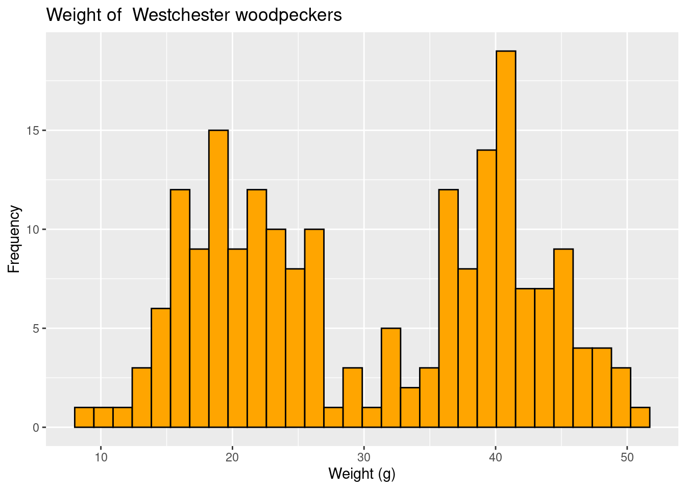
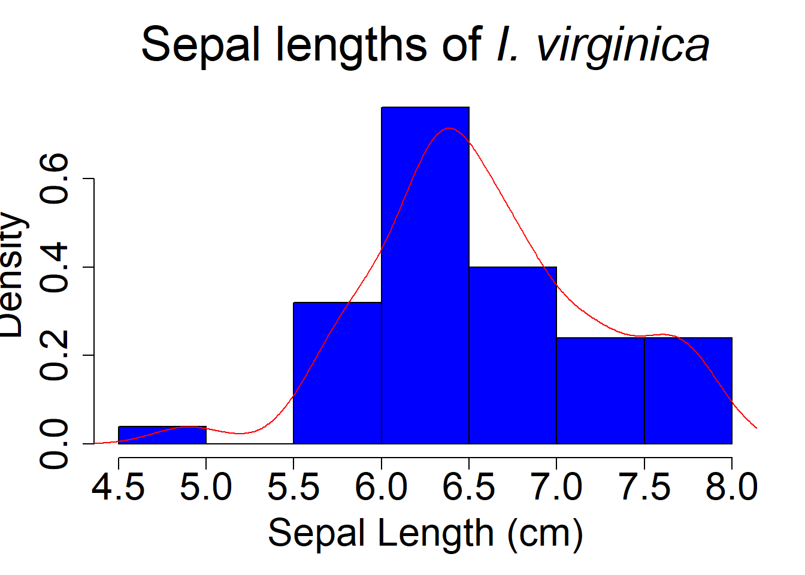
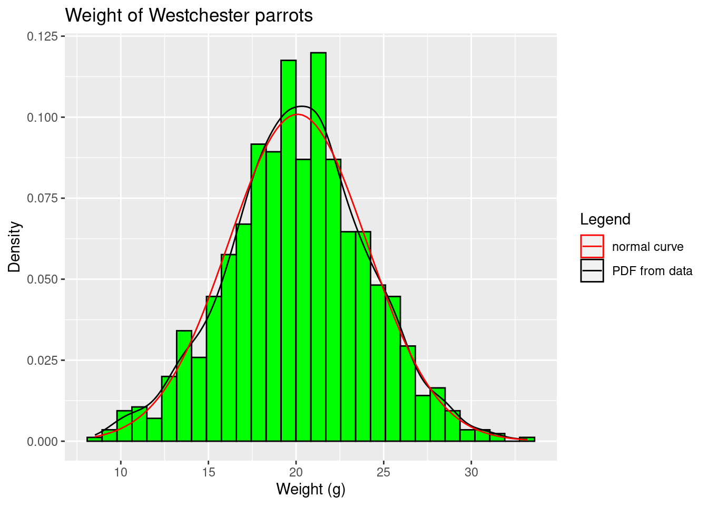
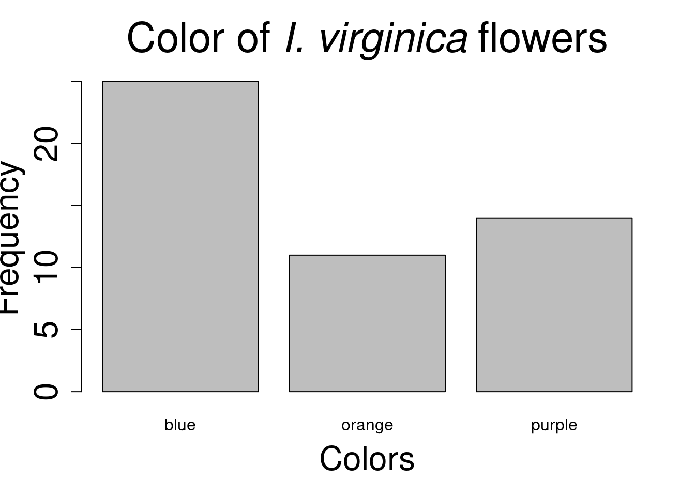
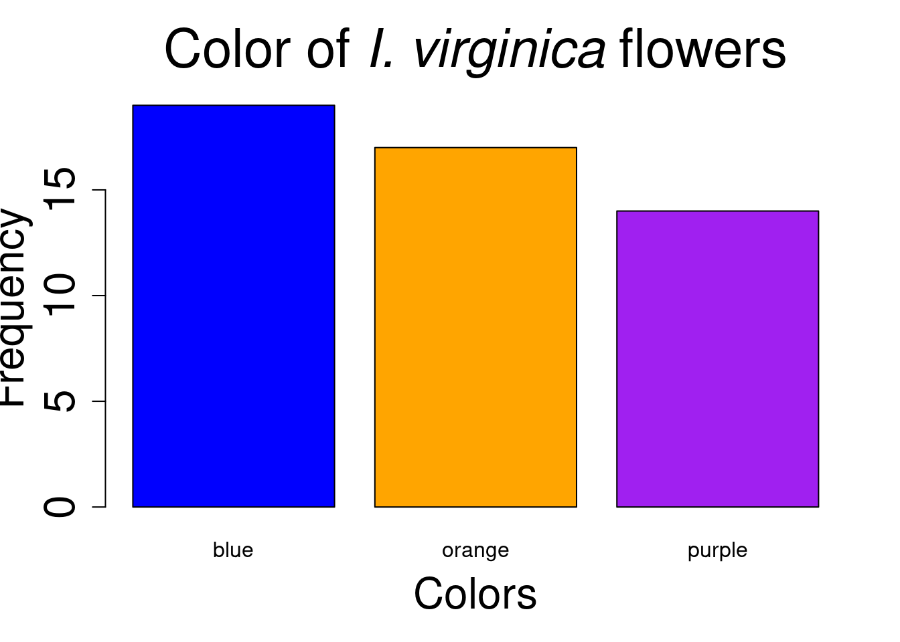
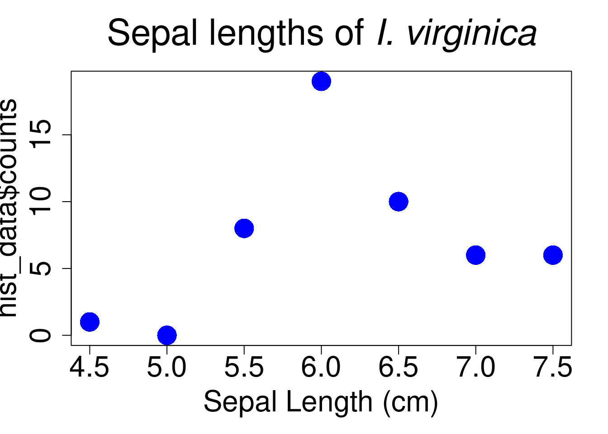

Figure 1: XKCD: Data Trap. It’s important to make sure your analysis destroys as much information as it produces.
Once we have some data, the next step is often to summarize it. In fact, we’ve already done that in some ways. Some statistics like the mean may be considered a summary of the data. This may be useful because we prefer large datasets (remember good sampling!), but making sense of a list of numbers can be really hard! Summaries help us describe, and eventually compare, datasets, which we are using to infer something about a population.
Think about it this way. We want to know if several species of iris (Iris versicolor, setosa and virginica) have similarly-shaped flowers. Since we can’t measure every flower on every plant from these species, we sample several sites and come up with the following data (using R’s built-in iris dataset).
Notice there are multiple (150, to be exact) rows of data, and several measurements for each flower. This isn’t a botany class, but in case you are interested, here’s some flower morphology.
Figure 2: Flower morphology. Pearson Scott Foresman, Public domain, via Wikimedia Commons
It’s really hard (or impossible) to just look at these numbers and infer anything about the population. Summary statistics help us get a better mental image of the distribution of the sample data.
Aside: While summaries can help make sense of data, and eventually we’ll add p-values to think about things like significance, in best case scenarios we don’t need this! We are going to focus on graphing (visual summaries) and numerical summaries in this section, but sometimes the data speaks for itself.
Figure 3: XKCD: Statistics
Don’t let complicated approaches confuse you! If your findings disagree with your (mental or actual) visualization of the data, something is likely wrong!
Types of data
We can summarize data using visual (i.e., graphs) or numerical (e.g., summary statistics like the mean) approaches. The specific way we summarize the data also depends on the type of data. Note, the trait we are collecting data on may also be called a variable (since it varies across the population and thus sample).
Categorical variables
Variables can be categorical (e.g., eye color). If categorical variables have no clear hierarchical relationship (again, like eye color - one isn’t better than the other), then they are nominal variables. If the categories imply a rank or order (e.g., freshmen, sophomore, junior, senior; egg, larvae, pupae, adult) then they are ordinal variables).
Numeric variables
If data values are based on numbers instead of categories, they are numeric variables. These can be divided into those are count-based (no fractions) - we call these discrete data- and those that can take on values between whole numbers - like height. We call these continuous variables.
Graphical summaries
Visual interpretations or displays of your data are an excellent way to let patterns, trends, and distributions easier to see. In this section we’ll go over a number of graphs. Consider this is a resource. I don’t expect you to know how to make each of these on your own immediately. We will actually introduce the software we are using to make these in later sections. Instead, you can return here later when you are actually making a graph for ideas (and code!).
While the type of graph you should use will depend on the data (and you may have several options!) all graphs should have
Descriptive title
Move beyond Y vs. X. State any patterns you see in the title to help the viewer know what they are looking for! Honest interpretation of data is always paramount, but in producing a graph you will already be making visualization decisions.
Labeled axes (measure and unit)
What did you measure, and using what (e.g. Sepal length (cm)
Data points
Other parts should only be included when needed.
Legends
Only needed for graphs with multiple datasets where color, shape, or some other visual cue indicates something to the viewer.
Trendlines
Can be used to show the general/overall relationship between variables. If you use these, make sure to use the right ones! Don’t fit a straight line to a curved relationship!
Single variable
Numerical data
Occasionally you only want to show the distribution for a single numerical variable (or how the data themselves are distributed). For example, we could want to display sepal lengths for all the Iris virginica we sampled. We could do this using a histogram.
label_size <-2title_size <-2.5hist(iris[iris$Species =="virginica", "Sepal.Length"], main =expression(paste("Sepal lengths of ",italic("I. virginica"))), xlab ="Sepal Length (cm)", cex.lab=label_size, cex.axis=label_size, cex.main=title_size, cex.sub=label_size, col ="blue")
The above plot is produced using functions available in all R installs. Many plots now use ggplot2, a package you have to install (don’t worry we’ll get there!). However, since you may come back to this later, I’ll also show how to make each of these graphs using ggplot2.
library(ggplot2)virginica <- iris[iris$Species =="virginica",] # only made to deal with ggplot2 histogram oddityggplot(virginica, aes(x=Sepal.Length)) +geom_histogram( fill="blue", color="black") +labs(title=expression(paste("Sepal lengths of ",italic("I. virginica"))),x="Sepal length (cm)",y="Frequency")
`stat_bin()` using `bins = 30`. Pick better value with `binwidth`.
Figure 4: Example of approximately normal data
Histograms put the data in bins (usually automatically set by software, but you can update!) and then show the number of samples that fell into each bin. This allows a quick estimate (look at the y, or vertical, axis) of how many samples were taken. The above image also allows us to begin to consider the bounds/range of the data (~4.5-8 cm), which gives information on the minimum and maximum values. We can also see lengths around 6-7 cm are most common.
This distribution of this data is approximately normal. We will define normality more later (equations!), but for now note the distribution is roughly symmetric, with tails on either side. Values near the middle of the range are more common, with the chance of getting smaller or larger values declining at an increasing rate…
Comparing the above graph to other distributions may be an easier approach. Consider these graphs.
cardinals <-rbeta(10000,70,5) hist(cardinals, main="Weight of Westchester cardinals", xlab ="\n Weight (g)", ylab ="Frequency (#)\n", col ="red", cex.lab=label_size, cex.axis=1.25, cex.main=title_size, cex.sub=label_size)

Figure 5: Example of left-skewed data
parrots<-c(rnorm(1000,20,4)) hist(parrots, main="Weight of Westchester parrots", xlab ="\n Weight (g)", ylab ="Frequency (#)\n", col ="green", cex.lab=label_size, cex.axis=1.25, cex.main=title_size, cex.sub=label_size)

Figure 6: Example of normal data
blue_jays <-rbeta(10000,2,12)hist(blue_jays, main="Weight of Westchester Blue Jays", xlab ="\n Weight (g)", ylab ="Frequency (#)\n", col ="blue", cex.lab=label_size, cex.axis=1.25, cex.main=title_size, cex.sub=label_size)

Figure 7: Example of right-skewed data
The cardinal Figure 5 data has a longer left tail and is not symmetric. We call this left- or negatively-skewed data (since it’s going lower on the x-axis). Compare that to the blue jay Figure 7 data; it has a longer right-tail and is positively- or right-skewed. Again, note this is all relative to symmetric data like you see with the parrots Figure 6, which is normally-distributed data.
All symmetric data is not normal, however. Look at the data on robin and woodpecker weights.
rochester <-c(runif(1000,.1,8)) hist(rochester, main="Weight of Rochester robins", xlab ="\n Weight (g)", ylab ="Frequency (#)\n", col ="Pink", cex.lab=label_size, cex.axis=1.25, cex.main=title_size, cex.sub=label_size)

Figure 8: Example of uniform data
woodpeckers <-c(rnorm(100,20,4),rnorm(100,40,4)) hist(woodpeckers, main="Weight of Westchester woodpeckers", xlab ="\n Weight (g)", ylab ="Frequency (#)\n", col ="orange", cex.lab=label_size, cex.axis=1.25, cex.main=title_size, cex.sub=label_size)

Figure 9: Example of bimodal data
Both these are roughly symmetric but clearly different from normally-distributed data. The robin data is what we call uniformly distributed. There are really no tails, as it appears you are just as likely to see any number within the bounds as any other. Kurtosis is the statistical term for what proportion of the data points are in the tails. High kurtosis distributions have heavy tails with multiple outliers. The uniform distibution is an example of a low kurtosis distribution (it has no tails!).
This figure may also help.
Figure 10: English: Plot of several symmetric unimodal probability densities with unit variance. From highest to lowest peak: red, kurtosis 3, Laplace (D)ouble exponential distribution; orange, kurtosis 2, hyperbolic (S)ecant distribution; green, kurtosis 1.2, (L)ogistic distribution; black, kurtosis 0, (N)ormal distribution; cyan, kurtosis −0.593762…, raised (C)osine distribution; blue, kurtosis −1, (W)igner semicircle distribution; magenta, kurtosis −1.2, (U)niform distribution.
If we consider the normal distribution (shown in black) to have 0 kurtosis, the uniform (pink) has less, and the double-exponential (red) has more.
Finally, the woodpecker data is what we call bimodal. It is symmetric in this case (not always true!), but it has a two clear peaks instead of a single central or skewed high point in the distribution.
These distributions helps us think about what we would expect to find in future samples (remember, we assume we have good samples!). To think about future sampling, we can change our y-axis from what we saw (frequency) to a probability density.
hist(iris[iris$Species =="virginica", "Sepal.Length"], main =expression(paste("Sepal lengths of ",italic("I. virginica"))), xlab ="Sepal Length (cm)", cex.lab=label_size, cex.axis=label_size, cex.main=title_size, cex.sub=label_size, col ="blue", prob = T) lines(density(iris[iris$Species =="virginica", "Sepal.Length"]), col ="red")

Figure 11: Probability density distribution
These probability density distributions can be calculated from data (as seen above), but they can also be developed from equations. The benefits of using a distribution derived from an equation is that it is consistent and easy to describe (standardized). This is why many common tests we will learn rely upon the data (or some derivative of it) following a known distribution. For example, many parametric tests will rely upon the data (or means of the data, or errors…we’ll get there) following a normal distribution. We can see our parrot data (which came from a normal distribution!) is very close to a “perfect” normal distribution as define by an equation.
hist(parrots, main="Weight of Westchester parrots", xlab ="\n Weight (g)", col ="green", cex.lab=label_size, cex.axis=1.25, cex.main=title_size, cex.sub=label_size,prob = T) lines(density(parrots), col ="black") curve(dnorm(x, mean=20, sd=4), col="red", lwd=2, add=TRUE, yaxt="n")legend("bottom", legend=c("PDF from data", "normal curve"), col=c("black", "red"), lty=1:2)

Figure 12: Comparing the distribution of the data to a perfect normal distribution
Bonus question: Why isn’t it perfect? (Click the grey triangle to see the answer!)
This is an easy example of sampling error!
Categorical data
For categorical data, a bar chart fills a very similar role. Note, however, we don’t bin the data., and there is inherent order for some examples (nominal data). For example, we could examine the colors of our I. virginica. To do this, we’ll need to add some data to our iris data (notice this produces no output…)…
barplot(I_viriginica_colors$N, names.arg = I_viriginica_colors$Color, xlab="Colors",ylab="Frequency",cex.lab=label_size, cex.axis=label_size, cex.main=title_size, cex.sub=label_size, main =expression(paste("Color of ",italic("I. virginica "), "flowers")))

Figure 13: Distribution of flower colors
Or better
barplot(I_viriginica_colors$N, names.arg = I_viriginica_colors$Color, cex.lab=label_size, cex.axis=label_size, cex.main=title_size, cex.sub=label_size, main =expression(paste("Color of ",italic("I. virginica "), "flowers")),xlab="Colors",ylab="Frequency",col = colors)

Figure 14: Distribution of flower colors
Graphing issues
Note all of the graphs above share a similar problem. People tend to like bars, but they are actually just using a lot of ink! We could get the same information about sepal lengths, for example, using
hist_data <-hist(iris[iris$Species =="virginica", "Sepal.Length"], main =expression(paste("Sepal lengths of ",italic("I. virginica"))), xlab ="Sepal Length (cm)", cex.lab=label_size, cex.axis=label_size, cex.main=title_size, cex.sub=label_size, col ="blue")
plot(hist_data$breaks[-8], hist_data$counts, main =expression(paste("Sepal lengths of ",italic("I. virginica"))), xlab ="Sepal Length (cm)", cex.lab=label_size, cex.axis=label_size, cex.main=title_size, cex.sub=label_size, col ="blue",pch =16, cex =3)

so the bars don’t add much.
chart issues#### #auto breaks####
hist(iris, Sepal.Length, main = “Sepal Lengths, auto breaks with R”, xlab = “Sepal Length (cm)”, cex.lab=label_size, cex.axis=label_size, cex.main=title_size, cex.sub=label_size, col = “blue”) #counts of auto breaks#### x =hist(iris$Sepal.Length, main = “Sepal Lengths, auto breaks with R”, xlab = “Sepal Length (cm)”, cex.lab=label_size, cex.axis=label_size, cex.main=title_size, cex.sub=label_size)
plot(x\(breaks[-9], x\)counts, main = “Sepal Lengths, auto breaks with R”, xlab = “Sepal Length (cm)”, ylab = “Frequency”, cex.lab=label_size, cex.axis=1.5, cex.main=title_size, cex.sub=label_size, col=“blue”, pch = 16, cex = 3) #setting own breaks#### hist(iris\(Sepal.Length, breaks=3, main = "Sepal length histogram, 3 breaks", xlab = "Sepal Length (cm)", cex.lab=label_size, cex.axis=label_size, cex.main=title_size, cex.sub=label_size, col = "blue") hist(iris\)Sepal.Length, breaks=10, main = “Sepal length histogram, 10 breaks”, xlab = “Sepal Length (cm)”, cex.lab=label_size, cex.axis=label_size, cex.main=title_size, cex.sub=label_size, col = “blue”)
#boxplot versicolor#### #need to use ggplot2 for ease (will get to this later and typically use it) library(ggplot2) ggplot(iris[iris$Species == “versicolor”,], aes(Species,Sepal.Length)) + geom_boxplot(aes(colour=Species), size = 3) + ylab(“Sepal Length (cm)”)+ggtitle(“Sepal Length of Iris versicolor”)+ xlab(““) + theme(axis.title.x = element_text(face=”bold”, size=28), axis.title.y = element_text(face=“bold”, size=28), axis.text.y = element_text(size=20), axis.text.x = element_text(size=0), legend.text =element_text(size=20), legend.title = element_text(size=20, face=“bold”), plot.title = element_text(hjust = 0.5, face=“bold”, size=32))
#data from multiple groups#### #barchart #### # #load function from Rmisc library(Rmisc)
#now use function_output <- summarySE(iris, measurevar=“Sepal.Length”, groupvars = c(“Species”))
#turn this into pie chart#### vegSurvey_veg_per_site\(sampling_point <- factor(vegSurvey_per_site\)sampling_point) #have to make weird empty factor else you get concentric circles vegSurvey_veg_per_site$Share <- “” ggplot(vegSurvey_veg_per_site, aes(x=Share, y=Proportion)) + geom_bar(aes(fill=veg_Type), size = 3, stat = “identity”) + ylab(“Frequency”) + xlab(“Sampling point”) + ggtitle(“Invasive and native species based on site”)+ scale_fill_manual(name=“Plant type”,values = c(“#FFA373”,“#50486D”)) + theme(axis.title.x = element_text(face=“bold”, size=28), axis.title.y = element_text(face=“bold”, size=28), axis.text.y = element_text(size=20), axis.text.x = element_text(size=20), legend.text =element_text(size=20), legend.title = element_text(size=20, face=“bold”), plot.title = element_text(hjust = 0.5, face=“bold”, size=32)) + coord_polar(theta=“y”) + facet_wrap(~sampling_point)
#or (not in slides) cast to get single plot/split#### vegSurvey_veg_per_site_cast <- dcast(vegSurvey_veg_per_site, veg_Type ~ “Proportion”, value.var = “Proportion”, mean)
#data over time#### #use airquality dataset for time series # airquality\(Date <- as.Date(paste(airquality\)Month, airquality$Day, sep=“/”), format =“%m/%d” )
#more than one axis#### #for 1:1 transformation data (anything you can use a function to make on a similar #scale) #can add easily but not get scale ggplot(airquality, aes(x =Date,y =Temp)) + geom_point(size = 3, col = “orange”) + geom_line() + geom_point(aes(y=Wind)) + xlab(“Date”) + ylab(“Temperature (C)”) + ggtitle(“Temperature over time”)+ theme(axis.title.x = element_text(face=“bold”, size=28), axis.title.y = element_text(face=“bold”, size=28), axis.text.y = element_text(size=20), axis.text.x = element_text(size=20), legend.text =element_text(size=20), legend.title = element_text(size=20, face=“bold”), plot.title = element_text(hjust = 0.5, face=“bold”, size=32))
#manually scale data and get secondary axis #have to aes to make tranformation (not aes_string) #put colour in quotes in aes to force legend ggplot(airquality, aes(x =Date,y =Temp)) + geom_point(aes(col =“Temp”), size = 3) + geom_line(col=“orange”) + geom_point(aes(y=Wind+50, col = “Wind speed”)) + scale_y_continuous(sec.axis = sec_axis(~.-50, name = “Wind (mph)”)) + xlab(“Date”) + ylab(“Temperature (C)”) + ggtitle(“Environmental measurements over time”)+ theme(axis.title.x = element_text(face=“bold”, size=28), axis.title.y = element_text(face=“bold”, size=28), axis.text.y = element_text(size=20), axis.text.x = element_text(size=20), legend.text =element_text(size=20), legend.title = element_text(size=20, face=“bold”), plot.title = element_text(hjust = 0.5, face=“bold”, size=32))

.png)